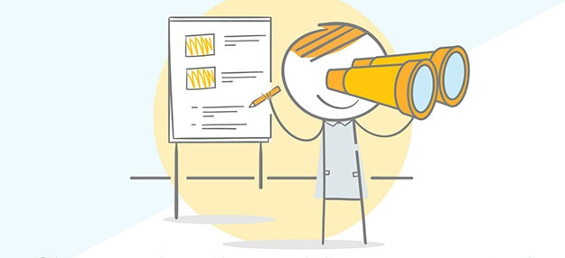
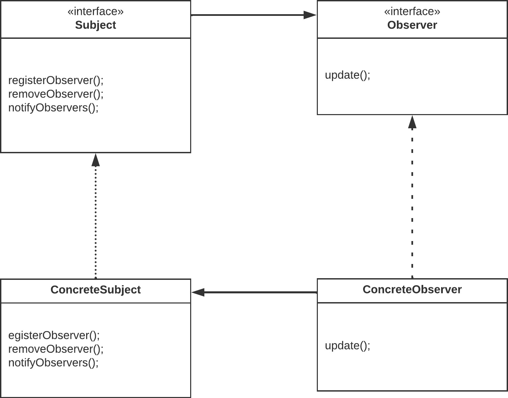

Das Observer-Muster

Heute werden wir uns das Observer-Muster ansehen (Beobachter-Muster).
Das Beobachtermuster ist ein Entwurfsmuster in der Softwareentwicklung. Es wird verwendet, wenn ein Objekt (der "Beobachtbare") Änderungen in seinem Zustand hat und andere Objekte (die "Beobachter") darüber informiert werden müssen.
In einfachen Worten bedeutet das, wenn sich etwas in einem Teil des Programms ändert, werden alle anderen Teile, die darauf achten, benachrichtigt. Das ermöglicht es verschiedenen Teilen deiner Software, miteinander zu kommunizieren und auf Veränderungen zu reagieren, ohne dass sie ständig nachschauen müssen, ob etwas passiert ist. Es ist, als ob sie "zuhören" und automatisch handeln, wenn etwas Wichtiges passiert.
Die Darstellung des Beobachtermusters in einem UML-Diagramm
